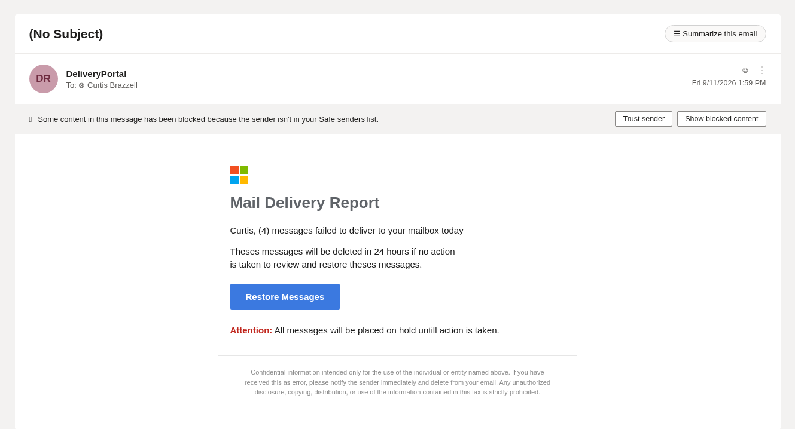
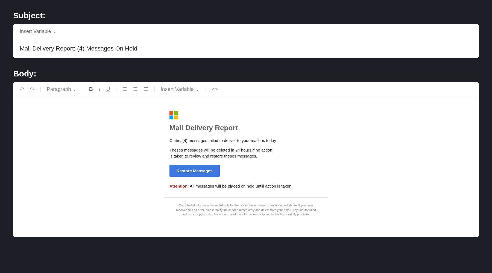

Two phishing emails from the same campaign landed in our own inbox this week. Both made it past filtering. Neither one was clever, and that is the more useful story. Most of what actually reaches a real inbox is not clever. It rides infrastructure that already has a reputation to spend.
The short version: A throwaway domain sent through a legitimate bulk email service passes SPF, DKIM, and DMARC cleanly, because that authentication checks the domain's own configuration, not whether the domain has any business being in your inbox. The lure was a fake Microsoft mail-quarantine notice. We turned it into a selectable email template inside the PhishU Framework the same day.
What Landed
The message was styled as a Microsoft mail-delivery report: a small four-color Office-style logo, a headline reading "Mail Delivery Report," and a body claiming four messages had failed to deliver and would be deleted in 24 hours unless the recipient clicked "Restore Messages." Red urgency text repeated the deadline. A confidentiality footer rounded out the message, copied from somewhere else and never edited for the medium. It still refers to the email as "this fax."
None of it was proofread. "Theses messages will be deleted" and "placed on hold untill action is taken" both shipped exactly as written. Outlook had already flagged the sender enough to block embedded content by default, showing a "sender isn't in your Safe senders list" banner above the message. It still reached the inbox.

The Infrastructure Behind It
The lure copy is not the interesting part. What got it delivered is.
The message authenticated against a domain almost nobody would recognize: kasrelsalam[.]co. SPF, DKIM, and DMARC all passed. That is worth pausing on, because "authentication passed" is exactly the signal a lot of security awareness training tells people to trust. Authentication only confirms a domain is configured correctly for its own mail. It says nothing about whether that domain has any legitimate reason to be sending to you. kasrelsalam[.]co configured its records perfectly and still exists only to spam.
The mail itself rode through SendGrid, a mainstream bulk email platform used by a large share of legitimate companies. That is also why the pattern is durable: SendGrid's own sending reputation is generally solid, an account is easy to open, and a spam or phishing domain sent through it inherits some of that trust by association. The flaw is not specific to SendGrid: it is the standing cost of any large, accessible email platform, and every major provider deals with some version of it.
One more detail gave the operation away completely. The message's "From" field, instead of a normal display name and address, contained a long block of encoded text. Decoded, it turned out to be internal bulk-mail tracking data: a campaign date code, an audience-segment label, a subscriber ID, a couple of tracking hashes, and an A/B creative-variant tag. That data belongs inside a tracked link, not in a sender's address. A mail-merge template broke somewhere in the sending pipeline and dumped its own personalization payload into the wrong field. It is a small thing, and it is exactly the kind of detail that separates a hand-built targeted lure from a rented mail-merge blast running against a purchased list.
What This Means for Your Inbox
- Authentication passing is not a trust signal on its own. SPF, DKIM, and DMARC only prove a sender configured its own domain correctly, not that the domain has any right to be emailing you.
- A bulk-mail platform's reputation is not the sender's reputation. Anyone can open an account with a legitimate email service, and the messages inherit the platform's deliverability along with it.
- Broken personalization is a real, checkable tell. A garbled sender name or tracking junk where an address should be usually means the message came off an automated blast, not a targeted attacker who checked their work.
- Low-effort campaigns have not gone away. Grammar mistakes and mismatched boilerplate, like referring to an email as a fax, are still some of the most reliable signals, even with sharper attacks getting most of the attention.
Same Day, Same Framework
PhishU exists to turn real attacker behavior into training your own people actually see. The same day this landed, we rebuilt it as an email template inside the Framework: same subject, same body, same typos, same button. Nothing sanitized, because sanitizing it would defeat the point.

The template is a normal Email-type entry in the catalog now. Select it for a campaign the way you would select any other template, and it slots into the Framework's existing send path with no special setup. The training tie-in is not something bolted on for this one template: whatever email a recipient actually received during a campaign is automatically reconstructed for them in their post-campaign training, so the review shows the exact message they were sent rather than a generic description of "a phishing email." Pick the template, run the campaign, and the training side takes care of itself.
Phishing operators do not wait for a quarterly update to change their pretext. Staying current on what is actually landing in real inboxes, then getting it in front of your own users before the next wave does, is the whole model.
Want training built on what is actually hitting inboxes?
PhishU runs authorized phishing assessments for security teams, red teams, pentest firms, and MSSPs, with real campaign lures, reporting, and training tied to the outcome.
Contact Us